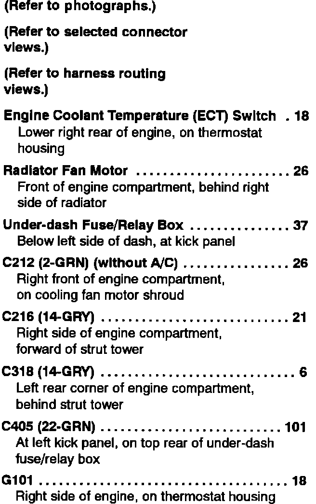

Operation CHARM
: Car repair manuals for everyone.
Home
>>
Acura
>>
1993
>>
Integra L4-1678cc 1.7L DOHC (VTEC) FI
>>
Repair and Diagnosis
>>
Engine, Cooling and Exhaust
>>
Cooling System
>>
Radiator Cooling Fan
>>
Radiator Cooling Fan Motor
>>
Diagrams
>>
Diagram Information and Instructions
>>
Locations and Photographs
>>
Component Location Index
>>
Cooling Fan (Engine)
>>
Without Air Conditioning
Without Air Conditioning
Cooling Fan (Without Air Conditioning) Component Location Index:
